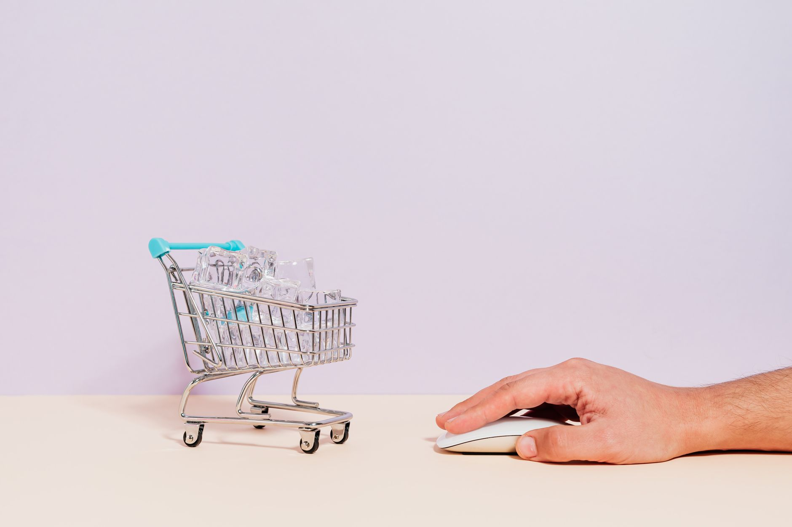

Your call to action tells a visitor exactly what to do next: call now, book a quote, add to cart, sign up. If that instruction is vague, buried, or missing, people leave without acting. The fastest win for most small business sites is giving every important page one clear primary action, written as a command, placed where people are already looking. Personalized calls to action convert 202% better than generic ones, according to HubSpot, so the words and placement you choose move real money.

Below are the practices that turn a passive page into one that gets phone calls and form fills.
Write One Clear Primary Action Per Page
Pick a single thing you want each page to accomplish, then make that the loudest button. A home page might push "Get a Free Quote." A service page might push "Book an Appointment." A contact page might push "Call Now." When you offer five choices of equal weight, you force people to think, and thinking is friction.

WordStream found that emails with a single call to action increased clicks by 371% compared to emails packed with competing links. The same logic holds on web pages. One main ask wins.
You can still include a secondary, quieter option for people who are not ready. Put it below or beside the primary button as a plain text link, like "Or see our pricing first." The hierarchy stays obvious: bold button for the action you want, soft link for the backup.
Audit your pages this week. If a page has three buttons that all look the same, you have no primary action. Fix it by demoting two of them.
Use Action Words That Name The Result
Generic labels like "Submit," "Click Here," and "Learn More" tell people nothing about what happens next. Replace them with verbs plus a payoff.
Swap these:
- "Submit" becomes "Send My Request"
- "Learn More" becomes "See Pricing and Plans"
- "Contact Us" becomes "Get My Free Estimate"
- "Sign Up" becomes "Start My 14-Day Trial"
Start with a verb. Name the benefit. Keep it under five words so it fits a button on any screen. First person sometimes lifts results too: "Start My Free Trial" can outperform "Start Your Free Trial" because it reads like the visitor talking to themselves. Test both with your own audience before you commit.
Avoid words that signal cost or effort. "Buy Now" feels heavier than "Get Started." "Register" feels like a chore next to "Claim My Spot." Small wording shifts change how risky the click feels.
Place CTAs Where Eyes Already Land
People do not read web pages top to bottom. They scan in an F shape, hitting the top, the left, and the headline area first. Put your primary action inside that zone.
Three spots earn their keep on almost every page:
- Above the fold. Visible without scrolling, next to your headline. This catches ready buyers immediately.
- Mid-page. After you have explained the offer or service, when interest peaks.
- End of page. A final ask for readers who needed the whole story before deciding.
On long service pages, repeat the same action at all three points. Use identical wording so the message stays consistent. A sticky header bar with a "Call Now" button that follows people as they scroll works well for service businesses that live on phone calls.
Do not stack a call to action in a spot nobody reaches. If your form sits below four screens of text, most visitors never see it.
Build Visual Hierarchy So The Button Stands Out
A call to action only works if people spot it instantly. That comes from contrast, size, and space.
Give your primary button a color that appears nowhere else on the page. If your brand palette is blue and gray, an orange or green button jumps out. The button should be one of the largest clickable elements on screen, with padding around the text so it reads as a button, not a link.
Surround it with white space. Crowded buttons get ignored. Empty room around a button pulls the eye straight to it. Aim for a tap target of at least 44 by 44 pixels so fingers hit it cleanly.
Keep one bold button per view. If two elements scream for attention, neither wins. Style your secondary option as an outlined button or a plain link so the ranking stays clear.
Match The CTA Type To The Visitor's Readiness
Not everyone who lands on your site is ready to buy. Offer different actions for different stages.
- Ready to act: "Book Now," "Call Today," "Add to Cart." High commitment, for people who already decided.
- Interested but cautious: "Get a Free Quote," "Schedule a Consultation." Lower risk, gives them a reason to engage without paying.
- Just researching: "Download the Pricing Guide," "Join the Email List." Captures contact details so you can follow up later.
A home page can carry one high-commitment button and one low-commitment offer side by side. A blog post should end with a research-stage action, since readers there are early in their decision. Match the ask to where the visitor sits, and more of them say yes.
Make Mobile Conversion Effortless
More than half of web traffic now comes from phones. Statista reports mobile accounts for roughly 60% of global website visits, so your call to action has to work with a thumb, not a mouse.
Test these on a real phone, not just a shrunk browser window:
- Buttons are big enough to tap without zooming, with space between them so people do not hit the wrong one.
- Phone numbers are click-to-call links. A tap should start the call, no copying required.
- Forms ask for the fewest fields possible. Name, phone, and one detail beat a ten-field form. Every extra field drops completion.
- The primary button stays visible without pinching or scrolling sideways.
Page speed feeds mobile conversion too. A page that takes five seconds to load loses people before the button even appears. Compress images and cut anything that delays the first view.
Add Honest Urgency And Scarcity
A reason to act now lifts response, but only when it is true. Fake countdown timers and invented "3 spots left" claims destroy trust the moment a customer notices.
Use real limits you actually have:
- "Booking now for next month, two slots remain this week."
- "Free quotes through Friday."
- "Spring service special ends June 30."
Tie urgency to your real calendar, inventory, or promotion. State the deadline plainly near the button. Even mild urgency, like "Get a quote today and we will call back within the hour," nudges hesitant visitors to move.
If you have nothing genuinely scarce, skip it. A clear, well-placed button beats a dishonest deadline every time.
Test One Change At A Time With A/B Tests
You will not guess the best button on the first try. Testing tells you what your specific audience responds to.
Run an A/B test by showing half your visitors version A and half version B, then keep the winner. Change only one thing per test so you know what caused the difference:
- Button text: "Get a Free Quote" against "Get My Free Quote"
- Button color: blue against orange
- Placement: above the fold against mid-page
Let each test run until you have enough clicks to trust the result, usually a few hundred visitors per version for a small site, and at least two weeks to cover normal weekly swings. Free and low-cost tools handle the split for you. Document every result so you stop repeating tests you already ran.
Track Performance So You Know What Works
A button you do not measure is a guess. Set up tracking so every important action counts as a goal.
Use a free analytics tool to record clicks on each call to action and completions of each form or call. Watch three numbers:
- Click rate: how many people who see the button click it.
- Conversion rate: how many who click finish the action. The average landing page converts around 2.35%, per WordStream, so use that as a floor, not a ceiling.
- Drop-off point: where people quit a multi-step form.
Check these monthly. If a button gets clicks but the form rarely completes, the problem is the form, not the button. If nobody clicks, the button or its placement needs work. The numbers point you to the exact fix.
Tie Every CTA Back To A Business Goal
A call to action exists to produce a result you can bank. Before you write one, name the outcome: more booked jobs, more quote requests, more email subscribers. Then make sure the button leads straight to that outcome with no detour.
Map each page to one goal. Your home page drives quote requests. Your blog grows the email list. Your product page sells. When the action on the page matches the goal of the page, your whole site pulls in one direction instead of scattering attention.
Open your three most-visited pages today and ask one question of each: if a visitor does exactly one thing here, what should it be? Rewrite the primary button to say that, move it where people look first, then watch your analytics for two weeks. Small, measured changes to your calls to action compound into more calls, more forms, and more customers over the months ahead.
Related
- Mobile Website Speed Why It Matters For Local Business
- Small Business Website Mistakes To Avoid
- What a Small Business Website Needs to Succeed
Read next: Mobile Website Speed Why It Matters For Local Business